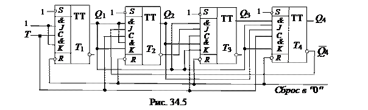
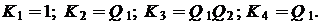

5. ДЕСЯТИЧНЫЙ СЧЁТЧИК
Наибольшее
распространение среди недвоичных счётчиков, у которых коэффициент пересчёта Kсч
< 2п,
имеют десятичные счётчики, у которых Kсч = 10. При проектировании
недвоичного счётчика вначале определяют количество его разрядов п так, чтобы 2п
было бóльшим ближайшим к Kсч числом. Затем
тем или иным способом (например, принудительной установкой некоторых разрядов
счётчика в 1) исключают избыточные состояния счётчика, число которых равно 2п
-
Kсч.
Так, для получения Kсч = 10 одноразрядный счётчик должен содержать четыре триггера, а избыточные состояния 2п - Kсч = 16 - 10 = 6 исключают тем или иным способом. При проектировании десятичного счётчика чаще используют двоично-десятичное кодирование чисел. В этой системе, например, число 375 записывается как 0011 0111 0101, где сохранены позиции десятичных разрядов: 00112 = 310, 01112 = 710, 01012 = 510.
В связи с этим десятичный счётчик должен состоять из последовательно соединенных декад, информация о каждом из девяти импульсов накапливается в декаде, а десятым импульсом она обнуляется, и единица переносится в следующую декаду. Каждая декада работает в натуральном двоичном коде с весами двоичных разрядов, начиная со старшего, соответственно равными 8, 4, 2, 1, т. е. декада работает в коде 8-4-2-1. Если к выводам декад подключить индикаторы, то они будут показывать записанные числа в декадах в привычном десятичном коде. Десятичные счетчики выполняются и с другими весами разрядов, например, в коде 4-2-2-1.
На рис. 34.5 изображена функциональная схема десятичного счётчика с параллельным переносом на JK-триггерах с встроенными логическими элементами, реализующая переключательные функции:


Рассмотрим работу схемы. Пусть по тактовому входу Т на триггер Т1 поступило семь импульсов и показание счётчика 0111. При этом на входах К триггеров Т1, Т2 и Т3 будут логические единицы. Восьмой импульс вызовет переключение всех триггеров счетчика, т. е. в нём будет записан код 1000. Девятый импульс вызовет переключение только первого триггера, так как остальные триггеры заблокированы по входу J уровнями логического нуля с триггеров Т1, Т2 и Т3 соответственно. Показание счётчика будет 1001. Десятый входной импульс вызовет переключение триггеров Т1 и Т4, так как триггеры Т2 и Т3 заблокированы по входу J уровнями 0 с выходов соответствующих триггеров. Счетчик зафиксирует двоичный код 0000, т. е. установится в исходное состояние.
Уменьшение числа устойчивых состояний в счётчике прямого счёта достигнуто за счёт введения обратных связей, посредством которых сигнал с какого-либо старшего разряда поступает в младшие, обеспечивая при этом изменение естественной последовательности двоичных чисел при подсчёте входных импульсов. Этим способом можно строить счётчики с заданным коэффициентом пересчёта.